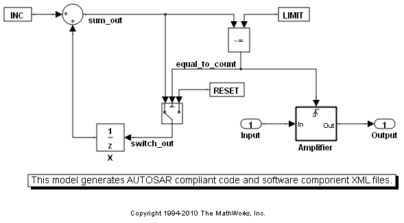
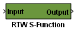

AUTOSAR コードの生成
このデモでは、AUTOSAR 準拠のコードを生成し、Simulink® モデルから AUTOSAR ソフトウェア コンポーネントの記述 XML ファイルをエクスポートする方法を示します。
目次
モデルの準備
rtwdemo_autosar_counter デモ モデルを使用して、AUTOSAR 準拠コードの生成に必要な手順を確認できます。
- rtwdemo_autosar_counter モデルを開きます。
- [ツール] メニューをクリックし、[Real-Time Workshop]、[オプション] を選択します。
- システム ターゲット ファイルを AUTOSAR ターゲット (autosar.tlc) に変更します。
このほか、システム ターゲット ファイルを変更する方法として、次のコマンドを実行することもできます。
% Model defines modelName = 'rtwdemo_autosar_counter'; % open the model open_system( modelName ); % Programmatically set the system target file to autosar.tlc set_param( modelName, 'SystemTargetFile', 'autosar.tlc' );
既定の AUTOSAR ポート設定の変更
既定の設定では、AUTOSAR のポート名、データ要素名、およびインターフェイス名は Simulink® のポート名と同じです。これらの既定の設定を変更するには、AUTOSAR インターフェイスのダイアログまたはコマンドライン オブジェクトを使用します。
既定の AUTOSAR ポート設定の変更: AUTOSAR インターフェイスのダイアログの使用
- [ツール] メニューをクリックし、[Real-Time Workshop]、[AUTOSAR コンポーネントとしてモデルを設定] を選択します。
- AUTOSAR インターフェイスのダイアログ ボックスで、[既定の設定を取得] をクリックして、モデルのインターフェイス ダイアログを既定値に設定します。
- 変更したら、[検証] ボタンをクリックして、変更内容が AUTOSAR 識別子の命名規則に従っていることを確認します。
このほか、AUTOSAR ポート設定を変更する方法として、RTW.AutosarInterface オブジェクトを使用して既存の設定をプログラムによって変更することもできます。
% Retrieve the RTW.AutosarInterface object autosarInterface = RTW.getFunctionSpecification( modelName ); autosarInterface.getDefaultConf; autosarInterface.setIOAutosarPortName( 'Output', 'Counter' ); autosarInterface.setIODataAccessMode( 'Output', 'ImplicitSend' ); autosarInterface.setIODataElement( 'Output', 'data' ); autosarInterface.setIOInterfaceName( 'Output', 'genericInterface' ); [success, errmsg] = autosarInterface.runValidation(); if ~success error('rtwdemo:AUTOSAR', errmsg); end
AUTOSAR 準拠コードの生成
Ctrl + B キーを押すか、次のコマンドを使用して、モデルから AUTOSAR 準拠コードを生成します。
rtwbuild( modelName );
### Starting Real-Time Workshop build procedure for model:rtwdemo_autosar_counter ### Generating XML files description for model:rtwdemo_autosar_counter ### Successful completion of Real-Time Workshop code generation for model:rtwdemo_autosar_counter
INC、K、LIMIT、RESET は、AUTOSAR キャリブレーション パラメーターとして設定されています。これらのパラメーターには、生成されたコード内で AUTOSAR Rte_Calprm 関数シグネチャを使用してアクセスします。
生成された XML ファイルと C コードを AUTOSAR オーサリング ツールにインポートできます。キャリブレーション パラメーターによって参照されるキャリブレーション インターフェイス (CalibrationComponent.arxml) をインポートする必要もあります。
ソフトウェアインザループ テストを使用した AUTOSAR コードの検証
生成されたコードを検証する一般的な方法としては、S-function 内で生成されたコードをラップします。これにより、生成されたコードをシミュレーションで検証できます。AUTOSAR ターゲットでは、AUTOSAR ランタイム環境 (RTE) API 呼び出しを使用してシミュレーション データを送るように、生成された S-function が自動的に設定されます。
% Configure the model for SIL set_param( modelName, 'GenerateErtSFunction', 'on' ); set_param( modelName, 'GenCodeOnly', 'off' );
次のコマンドを使用して、SIL ブロックをビルドします。ブロックをビルドしたら、SIL ブロックがオリジナルのモデルと同じデータを生成することを確認するためのテスト ハーネスを作成できます。SIL 検証の詳細は、Real-Time Workshop® Embedded Coder™ ガイド付き紹介デモの「リアルタイム コード テスト」を参照してください。
rtwbuild( modelName );
### Starting Real-Time Workshop build procedure for model:rtwdemo_autosar_counter ### Generating XML files description for model:rtwdemo_autosar_counter ### Successful completion of Real-Time Workshop build procedure for model:rtwdemo_autosar_counter